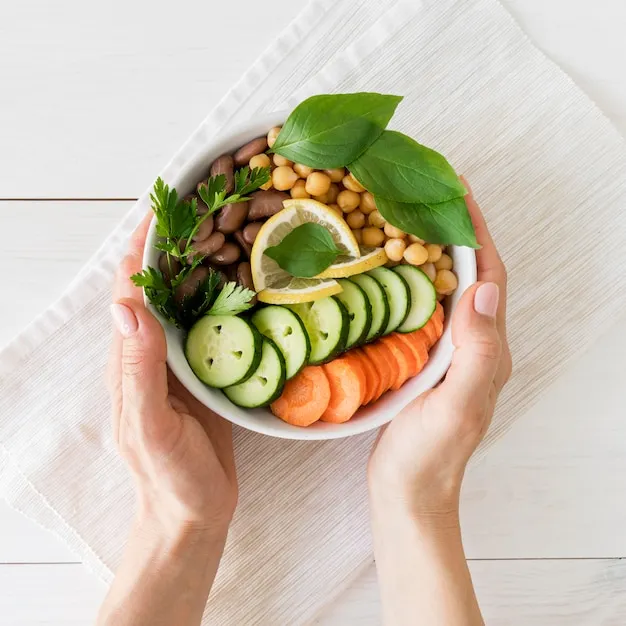

Bem vindo ao nosso site de Nutrição
Uma alimentação equilibrada ajuda a manter a saúde, previne doenças e melhora a qualidade de vida
Principais dicas
- Consuma frutas e vegetais diariamente.
- Beba bastante água.
- Mantenha um equilíbrio entre proteínas, carboidratos e gorduras.